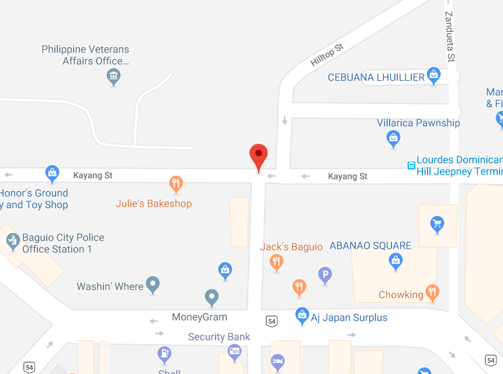

The Baguio Dominican Heritage Hill and Nature Park
The Diplomat Hotel is an old abandoned hotel located in Dominican Road, Baguio City. To date, it is one of the most haunted abandoned hotels in the world. The whole property on which it stands has been renamed as the Dominican Heritage Hill and Nature Park. A panoramic view of the city unfolds from its vantage point, the stone crucifix on the outdoor patio of the hotel's second floor. Due to its rustic feeling of beautiful interior and exterior, the old Diplomat Hotel turned out to be a great photoshoot location for photographers and models.
Kayang Terminal
-
You may ride:
Dominican Hill Jeep
-
Fare rate:
Php 10.00